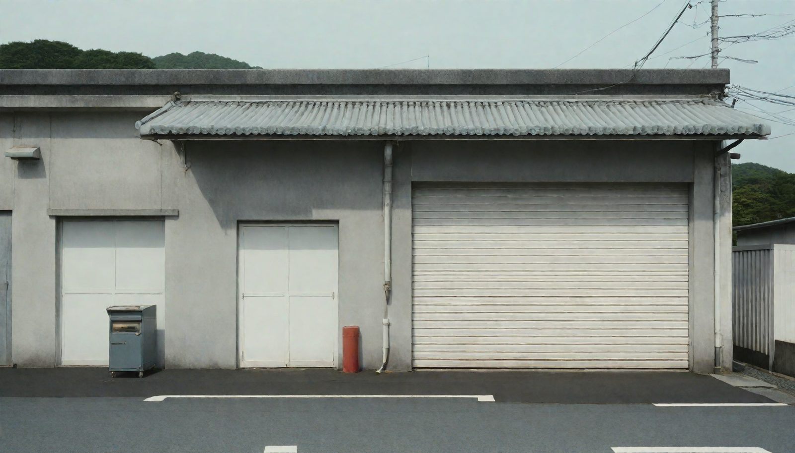
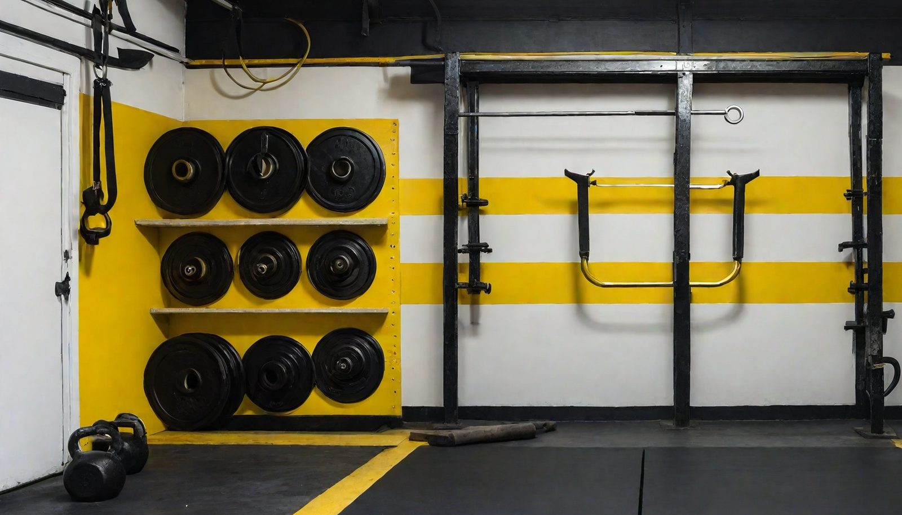

建物
天井までは5.4mあります。床には厚さ2cmのゴムのマットを、横8m、奥行き6mに敷いています。
床の黄色い線は、整備工場だった頃の作業場の区切りです。消さずに残して、しゃがむ時の足の幅の目印に使っています。
冷房と暖房はあります。春と秋はシャッターを半分開けて、風を通します。
置いてある道具

| 道具 | 数と重さ |
|---|---|
| バー | 3本。20kg、15kg、10kgを1本ずつ(10kgは重さに慣れるまでの軽い物) |
| 重りの板 | 1.25kgから20kgまで、合わせて180kg |
| ラック | 1台。バーを肩の高さで受けられます |
| ケトルベル | 4kg、6kg、8kg、12kg、16kg、20kg、24kgを1つずつ |
| ダンベル | 1kgから20kgまで |
| ゴムのバンド | 強さの違う5本 |
| 縄跳び | 長さの違う3本 |
| 台 | 高さ30cm、45cm、60cmの木の箱 |
| 平らなベンチ | 1台 |
走る機械や、テレビ、音楽を流す機械は置いていません。
時間
| 月、火、水、金、土曜 | 7:00から19:00 |
|---|---|
| 木曜と日曜 | 休み |
| 祝日 | 曜日どおり(木曜と日曜は休み、ほかの曜日は教えます) |
枠の時刻は「枠と予約」のページにあります。
駐車と道順
- 駐車は建物の前に2台1台は次の人の分です。早く着いた時は、前の人の車が出てから入れてください。
- 自転車建物の中に入れてかまいません。
- バス樫ノ森バス停から歩いて4分。県道沿いの、白いシャッターの建物です。
- 住所樫ノ森三丁目12-4